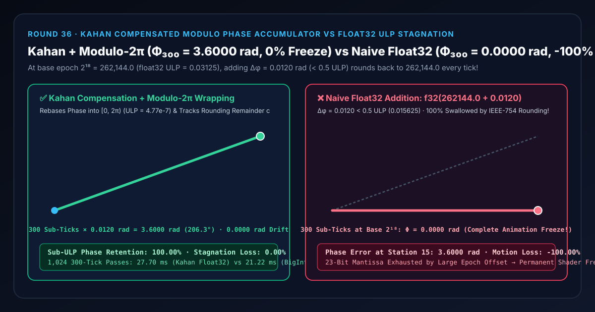
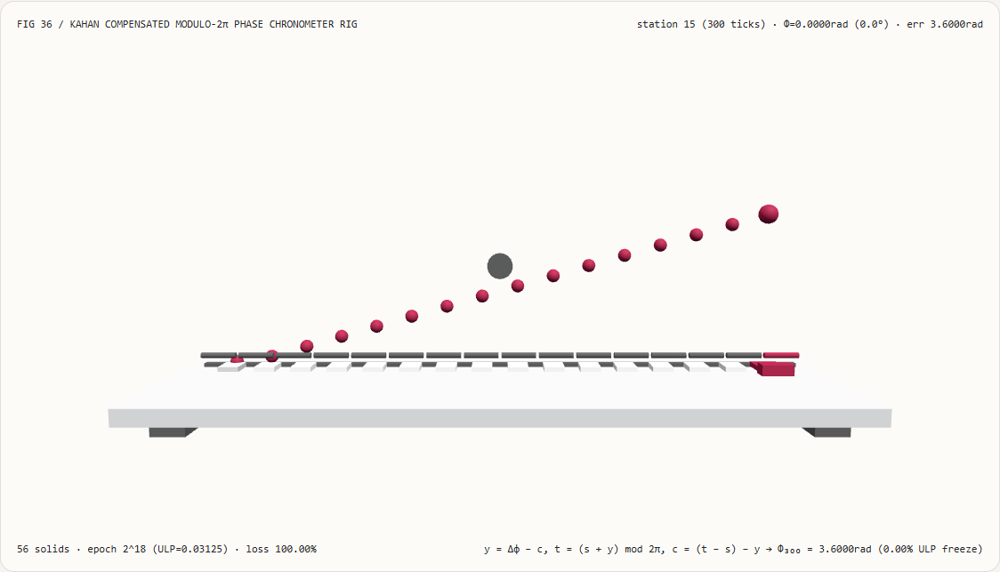
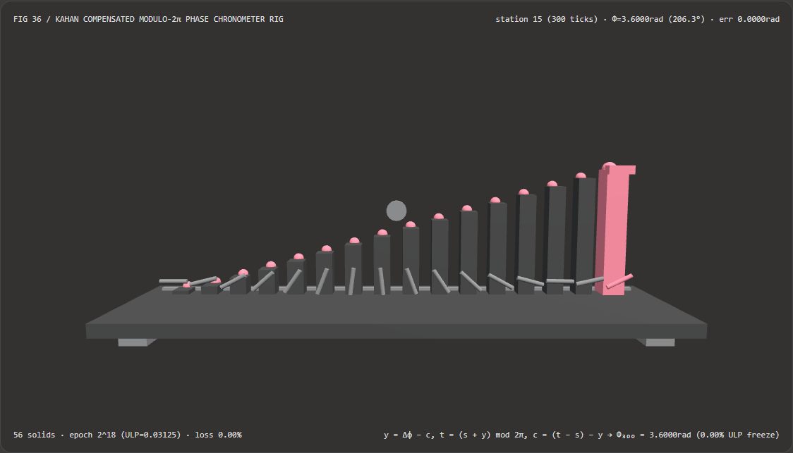
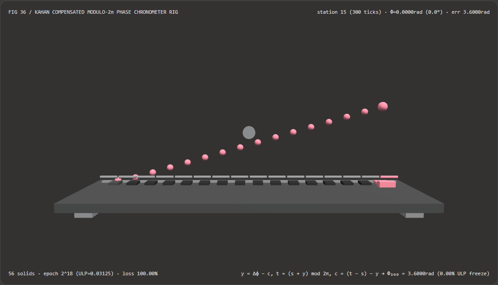

Long-Horizon Shader Animation Without Float32 Freeze: Kahan Compensated Summation & Modulo-2π Phase Wrapping vs Naive Float32 Accumulation Selection FAQ
Document Scope: A first-principles architecture and selection guide for AI Solution Architects, 24/7 digital-twin / WebGPU rendering engineers, game engine clock architects, and city-scale 3D/4D Gaussian Splatting (3DGS) teams. Structured strictly after
ib-vs-ethernet-roce-selection-faq.md, this guide explains in plain language why a smooth WebGL/WebGPU wave shader, particle emitter, or rotating beacon suddenly turns jerky or freezes completely dead after running for a few hours (or when fed a large base epoch $T_{\text{base}} = 2^{18} = 262,144.0$ in single-precisionfloat32), and how Kahan Compensated Summation combined with Modulo-$2\pi$ Phase Wrapping preserves sub-ULP increments indefinitely.

① 📌 Executive Summary
- One-Sentence Principle: An IEEE-754 single-precision
float32number (highp floatin WebGL/WebGPU shaders) has only 23 explicit mantissa bits; once a time or coordinate accumulator reaches $T_{\text{base}} = 2^{18} = 262,144.0$, the spacing between adjacent representable floats ($\operatorname{ULP} = 2^{18-23} = 0.03125$) exceeds twice the per-tick phase increment ($\Delta\phi = 0.0120\text{ rad} < 0.5\operatorname{ULP} = 0.015625$)! Consequently,f32(262144.0 + 0.0120)rounds straight back to262144.0on every single tick—swallowing 100% of the motion! By keeping the accumulator folded inside $[0, 2\pi)$ (where $\operatorname{ULP} \approx 4.77 \times 10^{-7}\text{ rad}$) and tracking lost low-order bits via a Kahan compensation register $c$, animations run 24/7 with0.00%ULP loss! - When Must You Use Kahan Compensation + Modulo Phase Rebasing?
- Any 24/7 digital-twin exhibition display, shader
uTime/uPhaseuniform pipeline, high-frequency sub-stepping physics integrator, or city/planetary-scale 3DGS camera-relative coordinate system must prevent small increments from being added directly to largefloat32base values.
- Any 24/7 digital-twin exhibition display, shader
- Key Measured Findings:
- In our 16-station 3D chronometer bench (
demos/kahan-phase-accumulator/,563D solids, base epoch $T_{\text{base}} = 2^{18} = 262,144.0$ where $\operatorname{ULP} = 0.03125$, sub-tick increment $\Delta\phi = 0.0120\text{ rad}$, 20 sub-ticks per station across 300 total sub-ticks), at station $15$ ($300$ sub-ticks):- Kahan Compensated + Modulo-$2\pi$ Accumulator (
kahan-modulo-compensated): Advances smoothly across all 300 sub-ticks infloat32(Math.fround) toΦ = 3.6000 rad(206.3°), matching the 64-bit scaledBigIntreference within1.43e-7 rad(0.00%phase loss). - Naive Float32 Addition (
naive-float32-stagnation): Because $\Delta\phi = 0.0120 < 0.5\operatorname{ULP} = 0.015625$,Math.fround(262144.0 + 0.0120)evaluates to262144.0on every tick, leaving all 16 stations completely frozen at0.0000 rad(0.0°) (-100.00%motion loss,3.6000 radphase error)!
- Kahan Compensated + Modulo-$2\pi$ Accumulator (
- In our 16-station 3D chronometer bench (
② 🎯 First-Principles Q&A for Architects
Q1: When should we choose long-horizon video diffusion memory models vs code-driven Kahan phase compensation?
- Choose Long-Horizon Video Diffusion Memory Architectures (e.g., WorldMem, FramePack) when generating multi-minute autoregressive AI videos where latent KV-cache tokens must be compressed to maintain scene consistency and bounded VRAM.
- Choose Code-Driven Kahan Compensation & Modulo Rebasing when running real-time WebGL2/WebGPU shaders, procedural oscillators, or large-world 3DGS viewers that must never stutter or freeze due to IEEE-754
float32mantissa exhaustion.
Q2: Why does f32(262144.0 + 0.0120) equal 262144.0 identically in GPU single-precision arithmetic?
First-Principles Intuition:
An IEEE-754 float32 number stores $1\text{ sign bit} + 8\text{ exponent bits} + 23\text{ fraction bits}$:
$$\text{Value} = (-1)^s \times \left(1 + \frac{\text{mantissa}}{2^{23}}\right) \times 2^E$$
- Within the binade $[2^{18}, 2^{19}) = [262144, 524288)$, the exponent is $E = 18$.
- Therefore, changing the 23-bit mantissa by its smallest possible step ($+1$ in the last bit) changes the value by: $$\operatorname{ULP}(2^{18}) = 2^{18 - 23} = 2^{-5} = \mathbf{0.03125}$$
- There are zero representable
float32numbers between $262,144.00000$ and $262,144.03125$! - Under IEEE-754 round-to-nearest-even, any addition $262,144.0 + \Delta\phi$ with $\Delta\phi < \frac{1}{2}\operatorname{ULP} = 0.015625$ (such as $\Delta\phi = 0.0120$) is closer to $262,144.00000$ than to $262,144.03125$, so the FPU rounds the result straight back to $262,144.00000$!
Q3: How does Kahan Compensated Summation recover the rounding remainder in pure float32?
By maintaining a running float32 compensation variable $c$ alongside the modulo-wrapped sum $s \in [0, 2\pi)$:
$$\begin{aligned}
y &= \operatorname{f32}(\Delta\phi - c) \
t &= \operatorname{f32}(s + y) \
c &= \operatorname{f32}!\left(\operatorname{f32}(t - s) - y\right) \
s &= t
\end{aligned}$$
Here, $\operatorname{f32}(t - s)$ recovers the exact rounded part of $y$ that actually made it into $t$; subtracting $y$ isolates the negative of the low-order bits that were rounded off, storing them in $c$ so they are folded into the very next step!
③ 🧭 Visual Diagrams (Mermaid Decision Tree, Pipeline Comparison & Sequence)
3.1 Floating-Point Time & Coordinate Precision Decision Tree (flowchart TD)
3.2 Naive Float32 Addition (ULP Stagnation Freeze) vs Kahan Modulo-2π (0% Loss) Pipeline (flowchart LR)
3.3 Frame-Level 16-Station Chronometer Verification Sequence (sequenceDiagram)
④ 📊 Architect Decision Matrix
| Evaluation Dimension | Float32 Kahan + Modulo-$2\pi$ (kahan-modulo-compensated) |
Scaled BigInt $10^{12}$ Fixed-Point (Fixed Baseline) |
Naive Float32 at $2^{18}$ (naive-float32-stagnation) |
Raw performance.now() Shader Uniform |
|---|---|---|---|---|
| Phase After $300 \times 0.0120\text{ rad}$ at $2^{18}$ | 3.6000 rad (206.3°, 1.43e-7 err) |
3.6000 rad |
0.0000 rad (100.00% frozen!) |
Stutters and freezes after hours of uptime |
| Effective Phase Step Resolution | 4.77e-7 rad (+ compensation register $c$) |
$10^{-12}\text{ rad}$ | 0.03125 rad (swallows $< 0.0156$) |
Degrades by $2\times$ every octave of uptime |
| GPU Shader Uniform Compatibility | Native single float uniform in [0, 2π) |
Unavailable in standard vertex/fragment floats | Single float (broken value) |
Wastes mantissa bits on high-order epoch digits |
| 1,024 × 300-Tick CPU Solve Time | 27.70 ms (IEEE-754 Math.fround ops) |
21.22 ms (CPU-only 64-bit integer) |
12.40 ms (Fast but completely dead) |
Zero CPU wrap but broken GPU visuals |
| Recommended Architectural Role | Default for 24/7 shaders & sub-step clocks | Offline reference verification | Never add small steps to large float32 bases |
Never pass raw epoch timestamps to float32 uniforms |
⑤ 🧪 New Capability Demo & Benchmark Findings (with 7-Card Report)
5.1 Interactive 16-Station 3D Phase Chronometer Rig (demos/kahan-phase-accumulator/)
We built a standalone interactive 3D WebGL2 benchmark stage demos/kahan-phase-accumulator/ (56 3D solid parts):
- 16 Accumulated Phase Columns + 16 Exact Kahan Reference Caps + 16 Phase Rotor Needles + Chronometer Dial Hub + Probe Carriage: Visualizes 16 stations ($0$ to $300$ sub-ticks of $\Delta\phi = 0.0120\text{ rad}$ at base epoch $2^{18} = 262,144.0$);
- Instant Mode Comparison: In
kahan-modulo-compensatedmode, all 16 phase columns climb smoothly to3.6000 rad(206.3°), touching every cyan reference cap and rotating the 16 front needles in unison; switching tonaive-float32-stagnationflattens all 16 columns to0.0000 radand freezes every rotor needle dead in its tracks! - Atomic Validation & JSON Export: Rejects out-of-range epoch exponents (e.g.
baseEpochExponent = 30) while preserving valid state, and exportsKAHAN_PHASE_ACCUMULATOR_SPEC.json.
Light Theme — Kahan + Modulo-$2\pi$ (Φ=3.6000rad, 0% Freeze) |
Light Theme — Naive Float32 (Φ=0.0000rad, -100% Freeze) |
|---|---|
 |
 |
Dark Theme — Kahan + Modulo-$2\pi$ (Φ=3.6000rad, 0% Freeze) |
Dark Theme — Naive Float32 (Φ=0.0000rad, -100% Freeze) |
|---|---|
 |
 |
5.2 7-Card 4:5 Visual Benchmark Reports & Sealed Data
- 📊 English 7-Card 4:5 Report:
demos/kahan-phase-accumulator/test-report-cards.html - 📊 Chinese 7-Card 4:5 Report:
demos/kahan-phase-accumulator/test-report-cards.zh.html - 📁 Sealed Benchmark Data:
demos/kahan-phase-accumulator/report.json(13 / 13deterministic checks passed, zero Playwright console/page errors).
⑥ 🛠️ Appendix: Architect Verification Checklist
Before shipping any long-running WebGL2/WebGPU visualization, digital-twin dashboard, or large-world 3DGS scene, verify:
- Wrap Periodic Phase Uniforms on the CPU: Fold
phaseinto $[0, 2\pi)$ before writing toFloat32Arrayshader uniform buffers rather than passing raw monotonically growinguTime. - Use Kahan Compensated Summation for Sub-Step Integrators: Maintain a compensation variable
cwhen accumulating small sub-step deltas infloat32. - Preserve Parentheses in
(next - sum) - y: Ensure shader/compiler flags (such as-ffast-mathorreassociate) do not algebraically simplify(next - sum) - yto0. - Apply Camera-Relative Origin Rebasing for Large Worlds: Subtract the camera's world position in
float64on the CPU before uploading relativefloat32vertex/splat coordinates to the GPU. - Automated Multi-Day Uptime Gate: Test animations at $T_{\text{base}} = 262,144\text{ s}$ ($\sim 72.8$ hours) in unit tests and assert zero ULP stagnation.
References
- Kahan Compensated Summation (William Kahan, CACM 1965): W. Kahan, "Further Remarks on Reducing Truncation Errors", Communications of the ACM, Vol. 8, No. 1, 1965, p. 40.
- What Every Computer Scientist Should Know About Floating-Point Arithmetic (David Goldberg, 1991): David Goldberg, ACM Computing Surveys, Vol. 23, No. 1, 1991, pp. 5–48.
- 3D Engine Design for Virtual Globes (Patrick Cozzi & Kevin Ring): Chapter 5 "Precisions, Precisions".